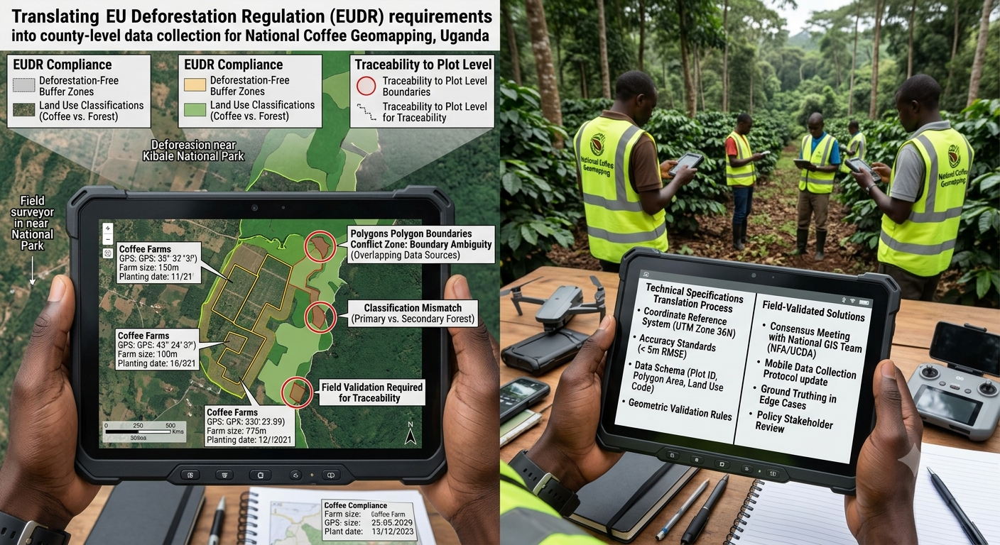

KAJIADO COUNTY, KE

Mar — Dec 2025 · GIS Expert & County Lead
National Coffee Geomapping
Translated EU Deforestation Regulation requirements into technical specifications for county-level geospatial data collection, processing and output validation. Documented boundary ambiguities, classification conflicts and projection mismatches, and proposed field-validated solutions with national GIS teams and policy stakeholders.
EUDR ComplianceSpec WritingEdge Cases
View case study ↗